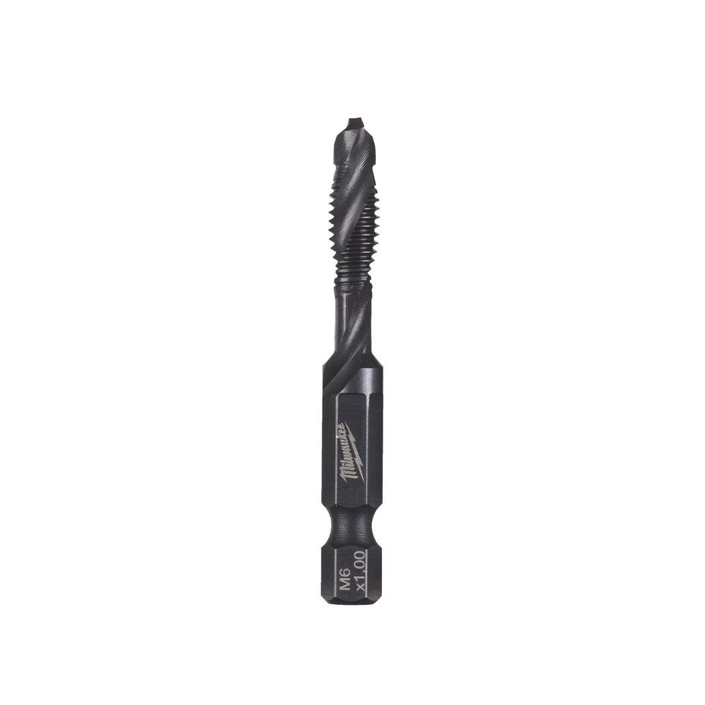

Milwaukee | 1/4" HSS-G M6x57mm - 1 pc Combi Drill+Tap
4932498264



Features
- 3 in 1 combination HSS-G drill bit: drilling, threading and deburring in one single operation.
- Suitable for use with battery powered or corded drills.
- Reception: ¼″ hex, E6.3.
- Impact rated : suitable for use with cordless impact drivers when keeping to recommended drilling speed.
- Thread type: metric ISO-thread DIN 13.
- Suitable for drilling in plastics, sheet steel and non-alloyed material up to 800 N/mm².
- Always use a suitable cutting oil.
Information
| Pack quantity | 1 |
| Screw size | M6 |
| Total length (mm) | 57 |